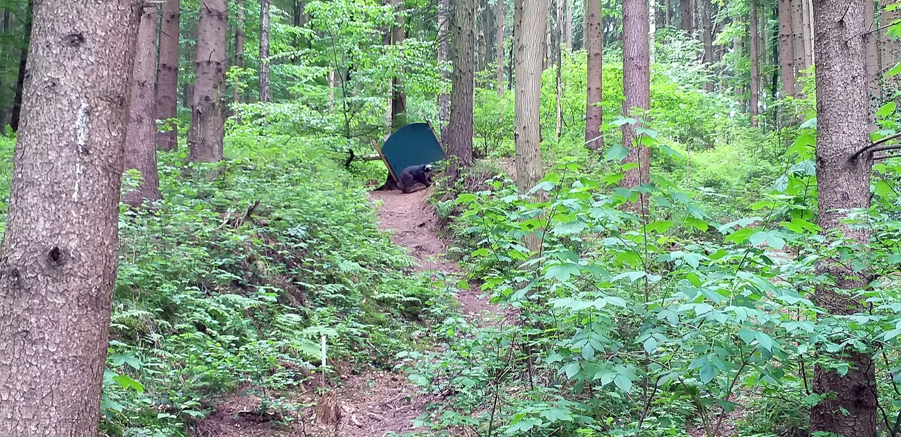
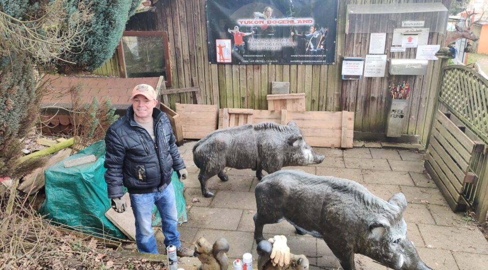

3D-BOGENPARCOURS IN DONZDORF
Draußen.
Ganz bei dir.
Mitten ins Ziel.
Den Alltag hinter dir. Den nächsten Schuss vor dir.
Entdecke Bogensport in seiner natürlichsten Form.
Augen aufs Ziel.
01 / DER PARCOURS
Kein Schuss
wie der andere.
Ein Weg durch die Natur. Und immer wieder eine neue Perspektive.
Beim 3D-Bogenschießen stehen naturgetreue Tiernachbildungen aus Hartschaum im Gelände. Zwischen Bäumen und natürlichen Hindernissen werden Konzentration, Gefühl und ein ruhiger Stand zu deinen wichtigsten Begleitern.
28 Abschussstationen mit bis zu 40 realistischen 3D-Zielen erwarten dich. Bergauf, bergab und auf langen, ebenen Bahnen fordert das Gelände immer wieder Konzentration und Technik – für Anfänger und erfahrene Schützen gleichermaßen.
Alles für deinen BesuchParcoursinformationen: Staufen Events
Die Natur gibt
den Takt vor.
Jede Station verlangt einen neuen Blick. Genau das macht den Reiz aus.
Schauen. Atmen. Fokussieren.
Entfernung einschätzen, das Ziel finden und ganz im Moment ankommen.
Vielfalt vor Augen.
Bis zu 40 Tiernachbildungen bringen Abwechslung in jede Runde durch den Wald.
Mit Respekt unterwegs.
Rücksicht auf Menschen und Natur gehört dazu. Die Regeln vor Ort sind verbindlich.

Aus unserem Vereinsarchiv · 202002 / UNSER VEREIN
Was uns verbindet?
Mehr als der Sport.
Seit unserer Gründung im Jahr 2000 dreht sich beim BSV Donzdorf vieles um das 3D-Bogenschießen. Und genauso um die Menschen, die diesen Sport lebendig machen.
Gemeinsame Runden, die Arbeit am Parcours und die Freude am nächsten gelungenen Schuss: Hier entsteht Gemeinschaft draußen in der Natur.
03 / NEUIGKEITEN
Neues aus
dem Parcours.
Die aktuellen Artikel von Staufen Events.
Direkt hier lesen und auf dem Laufenden bleiben.
Neuigkeiten werden geladen …
04 / DEIN WEG ZU UNS
Die nächste Runde
beginnt hier.
Du möchtest den Parcours kennenlernen? Hier findest du die wichtigsten Informationen zu Ausrüstung, Anmeldung und Anfahrt.
Bogenschießen · Parkplatz Stausee
Am Stausee, bei der Waldschenke
73072 Donzdorf
Anfahrt zum Parkplatz am Stausee. Den Parcourszugang und die Hinweise vor Ort beachten.
Gut zu wissen, bevor du losgehst.
Besuch & Kontakt
Für deine Besuchsplanung, Öffnungszeiten und Parcoursgebühren erreichst du Staufen Events unter 0151 153 16 812 oder info@staufen-events.de.
Bogenverleih & Preise
Du brauchst keinen eigenen Bogen: Staufen Events bietet Leihmaterial mit fachkundiger Einweisung. Der Verleih ist ab zwei Personen möglich.
- Erwachsene
- 35 €
- Kinder bis 10 Jahre
- 28 €
- Gruppen, Firmen & Teamevents
- 59 € pro Person
Die Beträge beziehen sich auf den Bogenverleih; das Gruppenangebot umfasst Einweisung und komplette Ausstattung.
Zum Bogenverleih bei Staufen EventsRunden & Zeitplanung
Nach Ziel 13 kannst du zwischen einer kürzeren und einer längeren Runde wählen. Für die lange Runde nennt Staufen Events allein etwa zwei Stunden; mit mehreren Personen und Pausen solltest du mehr Zeit einplanen.
Mehr über die beiden RundenDein erster Besuch
Trage Wanderschuhe und wettergerechte Kleidung: Der Parcours führt durch abwechslungsreiches, teils unebenes Gelände. Wenn du einen Bogen leihst, erhältst du eine fachkundige Einweisung.
Für die Vorbereitung des Leihmaterials gib bei deiner Anfrage deine Körpergröße und an, ob du Rechts- oder Linkshänder bist. Nutze für die Anfahrt den oben verlinkten Parkplatz am Stausee und beachte die Beschilderung vor Ort.
Eigene Ausrüstung
Du kannst den Parcours auch mit deiner eigenen Bogenausrüstung nutzen. Armbrüste sind nicht erlaubt. Beachte die Parcoursregeln und Hinweise vor Ort.
Gemeinsam auf den Parcours
Ob mit Familie, Freunden oder Kollegen: Staufen Events organisiert auch Gruppen- und Firmenevents. Anfänger erhalten eine Einführung, erfahrene Schützen finden abwechslungsreiche Herausforderungen.
Events kannst du telefonisch oder per E-Mail buchen. Anschließend erhältst du eine Auftragsbestätigung und Rechnung; den Treffpunkt findest du in der Bestätigung.
Parcours & Angebote ansehenBSV DONZDORF